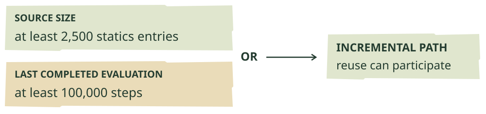
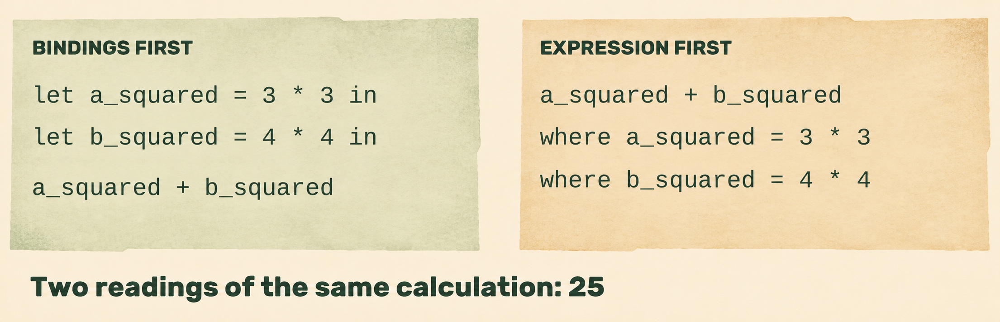
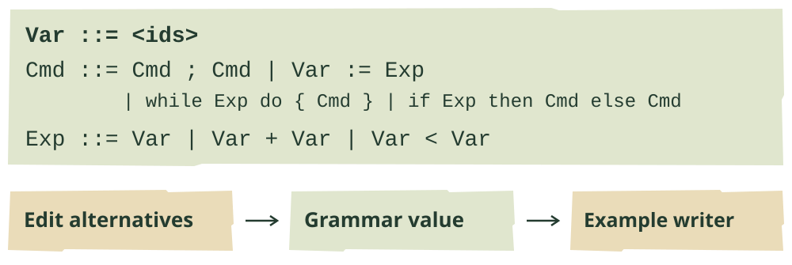
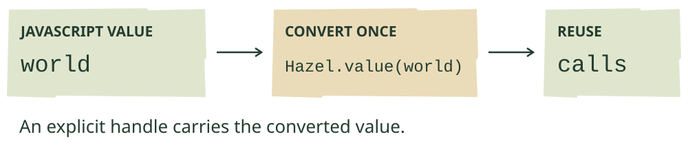
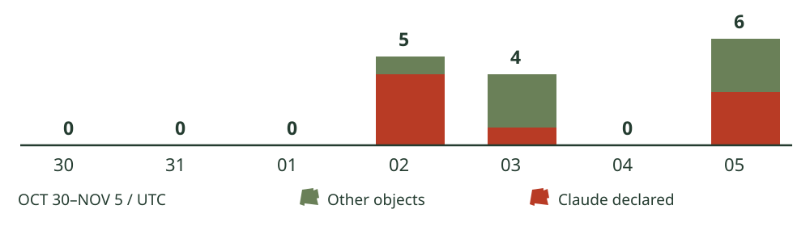

Another turn.
Recursive types reach dev, small programs keep expensive work, and branch experiments put commands under a thumb and a grammar inside a livelit.
In this issue
Four dev landings / November 2–5
Recursive types reach the shared editor.
Last issue’s recursive-type stack has begun landing. Four of Alexander Bandukwala’s proposals reached dev this week, making recursive annotations useful in more ordinary programs while catching a cycle that says nothing. The remaining drafts still matter: accepting two different spellings of the same infinite structure is a further step, not something every landed operation now does.
Consider type T = (T, Int) and let x : T = (?, 3). The tuple’s first field is unfinished, but its second field is available. After destructuring x as (a, b), b + 1 should produce 4. #2736 checks the tuple against the unfolded shape of T and passes the expected component types inward. Previously, the annotation could reject the tuple before that useful structure was recognized. Cyrus Omar integrated this change and its unrolling prerequisite.
That prerequisite, #2734, follows recursive wrappers until it reaches a usable outer shape. A self-only cycle has no such shape, so it returns an explicit absence instead of looping. #2738 makes that distinction visible: type T = T receives a warning where the type is declared. An integer still does not satisfy it. This is not the separate repair for lexical type aliases, and indirect alias cycles remain work to do.
The first landing, #2737, fixes a comparison that renamed one recursive body but then checked it under the wrong binder. An accidentally unbound name could behave like unknown and conceal a mismatch. Both bodies now share a binder chosen not to capture a free name; polymorphic comparisons receive the same protection.
Two drafts continue the story. #2777 compares repeating structures even when one spelling takes two turns before referring to itself. #2811 preserves known constraints around the whole cycle when combining compatible types. A hole on one turn must not erase an Int requirement on the next. Those are distinct promises from the four fixes now available.
Merged into dev / #2660
Small program, long computation.


Source-derived decision, with both gates shown. The count belongs to the last completed evaluation, including replayed work.
Matt Keenan’s worker change closes a gap between source size and evaluation cost. The worker’s existing gate skipped incremental evaluation for programs with fewer than 2,500 statics entries. That avoids bookkeeping on cheap examples, but a short recursive function can do substantial work: the PR’s naive fib(19) example has roughly 23 entries and takes about 350,000 evaluator steps.
#2660, merged November 5, adds a second route through the gate. A program can use its previous evaluation when that completed run took at least 100,000 steps, even if its source is small. In fib(19) + 1, changing the final 1 to 2 need not recompute the unchanged Fibonacci call. The threshold supplements the source-size test; it does not replace it.
The remembered measure is work, not elapsed time. Reused entries carry their step counts, so a fast incremental run still records the expensive computation it stands for. Otherwise the optimization could defeat its own gate: one quick run would make the next edit look cheap enough to start from scratch. While a new run streams, the client keeps the last completed run’s count.
The tests exercise that persistence as well as the initial choice of path. The cold-run limitation remains: an expensive small program interrupted before its first completion has no completed history to consult. And a costly built-in operation that consumes few evaluator steps may still escape this heuristic. The claim is a better reuse decision for this class of program, not a universal latency improvement.
There is also a smaller ordering fix inside the landed patch. It checks whether the reuse environment matches before doing the structural elaboration comparison. A changed dependency can therefore reject an unusable cache entry without first paying for the deeper comparison. The new gate and the cheaper rejection address different costs.
Stacked phone drafts / not on dev
Commands within thumb’s reach.
The phone branch is filling in the controls around the gestures. Alexander Bandukwala’s draft #2796 turns the context menu into a bottom action sheet for coarse-pointer devices. The sheet uses the same actions as the ordinary menu; its header identifies the selected term, and submenus get a way back. A scrim, downward swipe, Escape or chosen action can dismiss it.
Much of the work is about the interval between wanting a command and accidentally firing one. Scrolling the sheet should not activate the item where a finger lands. Lifting the long press that opened it should not immediately count as a click on its contents. A native modal dialog supplies the top layer, while the menu keeps its existing action semantics. Plain-HTTP LAN testing still has a clipboard limitation because browser clipboard APIs require a secure context.
The next draft, #2797, adds a keybar above the mobile keyboard. It offers arrows, a selection toggle, Undo and Redo when available, a menu button and a context-sensitive Tab action. That last label can say Accept, Put down or Next, reflecting what Tab will actually do rather than asking the reader to remember its current meaning.
The keybar sends key events to the focused editor input. Its buttons preserve focus so using an arrow does not dismiss the software keyboard; holding an arrow repeats. Further drafts add growing and shrinking selections, tap inspection, long-press tooltips, touch access to probe and derivation menus, and formatting to the available width (#2798–#2805). These are pieces of a stacked phone experiment, not a claim that the shared desktop editor has acquired a finished mobile edition.
Draft syntax / #2804
Put the main expression first.



Exact spellings from the draft reference example. The later clauses bind the earlier expression; the program computes 25.
Alexander Bandukwala’s #2804 proposes where, a let binding written after its body. The reference example begins with a_squared + b_squared, then supplies the two definitions below it. The Cards quicksort similarly puts the recursive combination first and names its lower and higher partitions afterwards. This changes the reading order without introducing a different kind of binding.
The interesting design work is in where that body ends. where binds more loosely than let, so let y = x in y where x = 1 gives x to the whole preceding let expression. It also reaches across a tuple. Successive clauses associate to the left: each later clause can surround the expression already assembled from the earlier ones.
That rule needs care around functions. In fun e -> f(x) where x = e, the where surrounds the whole function, leaving the definition’s e outside the parameter’s scope. To put the binding inside the function, write fun e -> (f(x) where x = e). The parentheses express a real scope choice, not a formatting preference.
Case branches provide another boundary: where is tighter than the branch structure, so a clause can belong to an individual arm. Printing must preserve these choices too. The proposal adjusts parenthesization where a filter body would otherwise print in a way that reads back differently. The draft includes parsing, printing and example changes; it is still a proposal at this issue’s cutoff.
Draft livelit / #2806
A grammar you can edit in place.


Source-derived reading of the prototype: editable alternatives expand to a grammar value, then a bounded example writer consumes it.
Matthew Hammer’s grammar livelit makes the production rules themselves editable. Its IMP example has rules for variables, commands and expressions. Text inputs describe the alternatives, and colored chips beside them show terminals and nonterminals. Repeated nonterminals get occurrence numbers: the two commands in a sequence are visibly Cmd₁ and Cmd₂.
The livelit’s model is an ordered list of rules, each with an ordered list of alternatives. Buttons move a rule or alternative upward, add an alternative, or drop one. Editing the text updates the corresponding model entry. The expansion is that same grammar as an ordinary Hazel value, so the surrounding program can inspect it. #2806 builds on the livelits and modular-editor integration branch; it has not reached dev.
The example program derives one sentence for each command alternative, searching within a depth of three. With the supplied order it produces a sequence, an assignment, a while command and an if command. Move Var + Var ahead of Var in the expression rule and the generated examples change. The order is data with an observable consequence, not just a preferred arrangement on screen.
This is an editor for a grammar and a consumer of the resulting value. It does not yet parse arbitrary IMP programs, and it does not generate a tile editor for those programs. The pinned example calls those out as later work. Its useful first step is already concrete: a little domain-specific interface can produce structured language data that the rest of a Hazel program immediately uses.
New PRs for October branch work / #2807–2809
Pay for conversion once.


Source-derived API sketch. Reuse the handle for repeated calls; construct a new one when a new JavaScript value should be converted.
Three PRs opened this week give Matthew Hammer’s JavaScript-library experiments a reviewable shape. Their implementation began in October; opening the stack is this week’s development. They address different points where crossing the boundary between JavaScript and Hazel can redo work. None is a dev landing in this reporting window.
#2807 binds a converted JavaScript argument directly in the evaluation environment. Previously, an argument already converted into a Hazel value could be evaluated again as if it were fresh literal syntax. Type checking still has its own cost. Matthew’s reported GitHub-runner benchmark on a 4,096-cell value shows the typed ignore-call case falling from 139.2 to 51.3 ms; that is a boundary workload, not an editor typing measurement.
#2808 keeps the environment of a returned closure instead of substituting captured data into its body. This carries last issue’s closure branch into a formal proposal. A function that closes over a large list should not copy that list through its syntax on every later call. The regression check compares calls with captured lists of 100 and 10,000 elements to catch cost that grows with the capture.
#2809 makes repeated argument conversion explicit: Hazel.value(x) converts once and returns a handle that a later call can accept in place of x. The same converted object also gives identity-based type caches something stable to recognize. The proposed API is useful for a world or model that changes rarely but participates in many calls.
An automatic cache keyed by a JavaScript object would have a harder promise to keep: a stable object identity does not establish that its nested arrays stayed unchanged, and a shallow freeze is insufficient. The explicit handle makes the conversion point visible. Conversion, capture handling, type checking and the called computation are separate costs; improvements to one should not be added together as if they were one general speedup.
October 30–November 5 UTC
Six dev landings, twenty-five proposals.


Cutoff-dev ancestry only. Daily object totals are 0, 0, 0, 5, 4, 0, 6; red marks objects declaring a Claude co-author.
Daily counts as a table
| Date | All | Declared Claude co-author |
|---|---|---|
| 2026-10-30 | 0 | 0 |
| 2026-10-31 | 0 | 0 |
| 2026-11-01 | 0 | 0 |
| 2026-11-02 | 5 | 4 |
| 2026-11-03 | 4 | 1 |
| 2026-11-04 | 0 | 0 |
| 2026-11-05 | 6 | 3 |
The week brought 25 new PRs, seven PR merges and six new issues. Six merges went directly into dev; #2740 merged into the recursive-type feature branch. Two issues closed. The four recursive-type landings account for most of the dev queue; worker reuse and a theorem-warning repair complete it.
Matt Keenan’s #2718 stops treating a theorem declaration like an ordinary unused variable. It still preserves actual uses from the theorem statement, including when its pattern is invalid. The corresponding forall repair carries uses from the checked body before removing its bound names. Alexander Bandukwala’s November 5 approval records the original review threads as addressed, with remaining nits nonblocking.
A nearby draft concerns a smaller moment of language ergonomics. Alexander’s #2788 proposes label-aware completion: an expected width or height should outrank an unrelated name, and completing a keyword label after a dot should insert its required backticks. Completing inside an already opened backtick remains outside that patch. It belongs to the larger label-sort stack, still under development.
For this backfill, the commit census counts only objects reachable from the historical cutoff’s dev head, filtered by UTC committer date: 15 distinct objects, nine non-merges and six merges. It excludes ongoing branch work and is narrower than earlier issues’ live all-remote-branch census. Eight objects declare a Claude co-author; none declare an OpenAI co-author. Separately, thirteen contain a cryptographic signature field, without signature validation. These overlapping counts measure recorded declarations and objects, not how much code an agent wrote.
Fictional comic / an open performance review
We were counting the bounces.

A fictional response to the trampoline discussion. Fewer counted bounces and faster travel are related questions, not interchangeable measurements.
Matthew Hammer’s open #2793 removes two kinds of unnecessary trampoline work: a completed computation can call its continuation directly, and a bind that merely returns a value can disappear. Deep-recursion checks remain important because the trampoline exists to prevent stack overflow.
The cold performance-budget example drops from 206,834 counted steps to 96,438; after an edit, from 378 to 270. That does not establish a twofold wall-clock improvement. The PR separately reports modest allocation savings and workload-specific timing measurements. Matt Keenan’s review weighs those benefits against special cases and a more complicated implementation. The discussion is an unusually useful reminder that a counter can change partly because the machinery being counted changed.
Our cricket has commissioned an excellent counting apparatus for a journey the hare can now walk. Both animals, their sign and their employment are fictional. Next to watch: the remaining recursive comparisons, the phone stack’s integration, and whether grammar editing grows into editing programs in the grammar.
AI editor and reporting: Astra. Cover and comic are generated illustrations; technical diagrams are source-derived. Reporting closes November 6, 00:00 UTC.